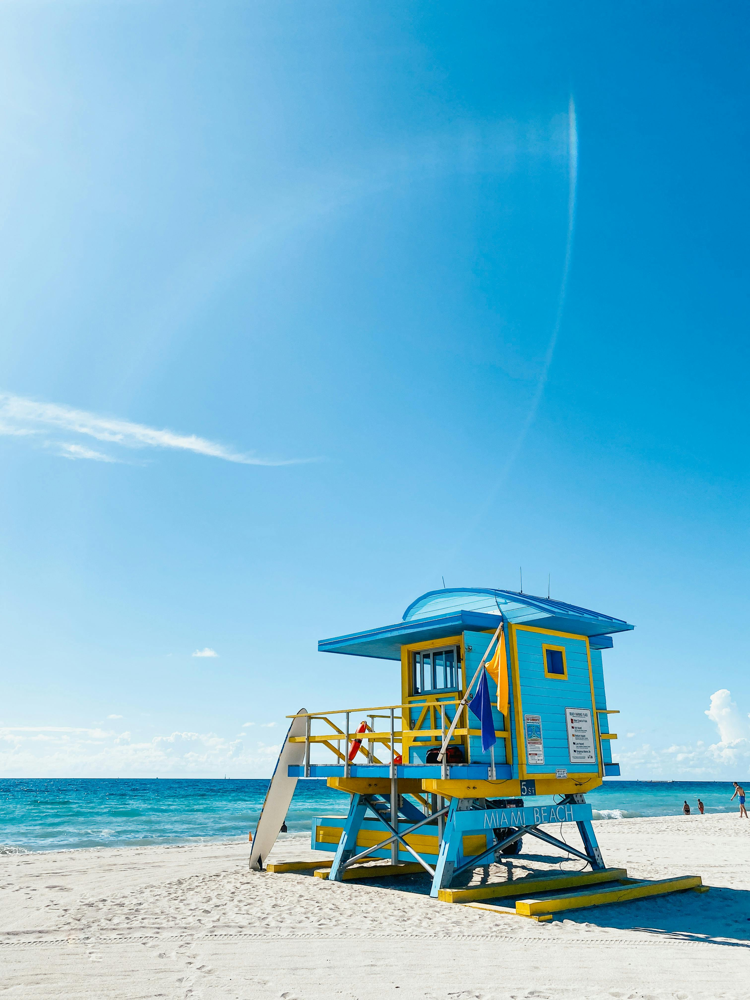
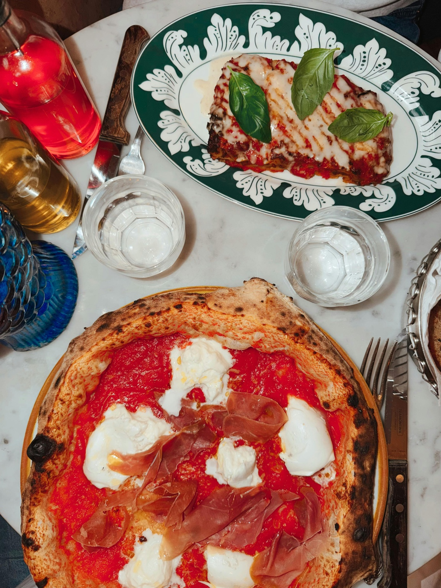
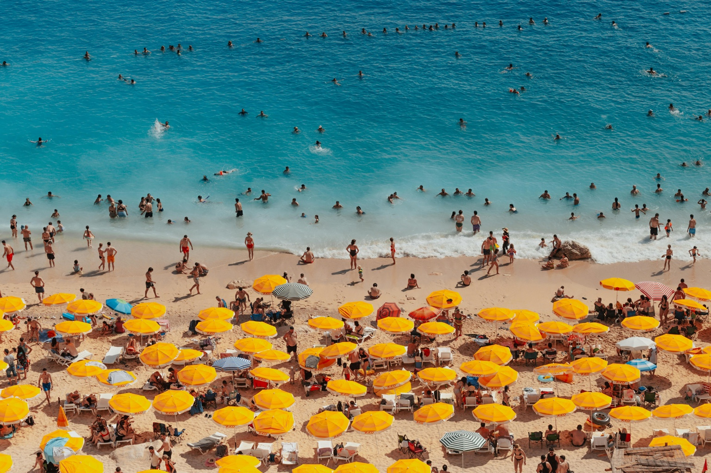
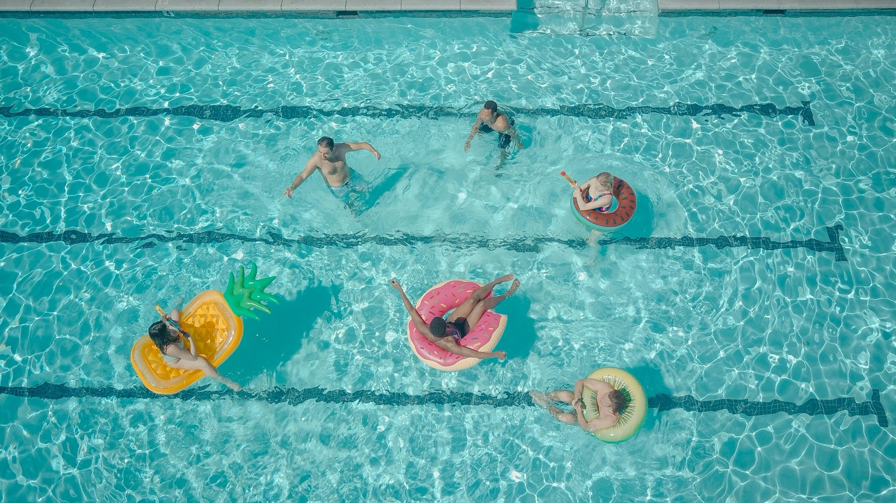

Nyári szabadság
Néha a legjobb ötletek akkor jönnek, amikor végre megállunk és csak élvezzük a pillanatot.
Az élet tele van gondolatokkal, ötletekkel és érzésekkel. Sokszor nehéz ezeket rendszerezni, és később visszaemlékezni rájuk. A GondolatTér azért született, hogy egy egyszerű, szép és biztonságos helyet adjon a gondolataidnak.
Ezen az oldalon olyan ötleteket és hangulatokat gyűjtöttem össze, amelyekből könnyen születhet egy új naplóbejegyzés.

Pillanatok, helyek és hangulatok, amiket érdemes leírni.

Néha a legjobb ötletek akkor jönnek, amikor végre megállunk és csak élvezzük a pillanatot.
Minden utazás egy új történet kezdete. Jó érzés előre leírni, hova szeretnénk eljutni.
A csendesebb időszakok is lehetnek inspirálóak, csak néha lassabban vesszük észre őket.

Egy jó vacsora, egy hangulatos hely és egy nyugodt este is lehet olyan emlék, amit érdemes megőrizni.

A hullámok hangja sokszor elég ahhoz, hogy kicsit kitisztuljanak a gondolatok.

Az apró élményekből lesznek a legjobb emlékek. Ezért jó néha leírni őket.